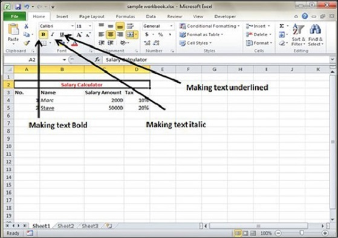

Text Decoration
- Bold − It makes the text in bold by choosing Home » Font Group » Click B or Press Control + B.
- Italic − It makes the text italic by choosing Home » Font Group » Click I or Press Control + I.
- Underline − It makes the text to be underlined by choosing Home » Font Group » Click U or Press Control + U.
